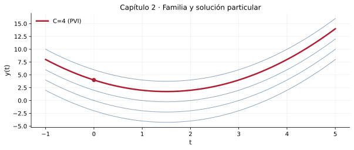

Soluciones generales, particulares, implícitas y verificación
Resultado de aprendizaje
Construir familias de soluciones por integración, imponer condiciones iniciales e interpretar la geometría y el dominio de cada solución.
Conceptos clave: integral indefinida, constante de integración, familia de curvas, solución implícita, dominio
2.1. Integrar una tasa de cambio
Si una EDO adopta la forma \(y\prime(t)=g(t)\), toda solución es una antiderivada de \(g\):
\[y(t)=\int g(t)\,dt+C\]
La constante \(C\) no es un detalle formal: produce una familia de curvas, todas con la misma derivada. La condición \(y(t_0)=y_0\) permite determinar \(C\) cuando el problema es compatible.
Compruebe la idea principal: identifique las condiciones bajo las cuales el procedimiento explicado es válido.
2.2. Solución general frente a solución particular
En \(y\prime=2t-3\), cada \(y=t^2-3t+C\) satisface la EDO. Los gráficos son traslaciones verticales de una misma parábola. Si \(y(0)=4\), entonces \(C=4\).
\[y(t)=t^2-3t+4\]
En modelos de ingeniería, el dato inicial puede representar posición, almacenamiento, deformación o temperatura. Conocer su significado físico es tan importante como calcular la constante.
Compruebe la idea principal: identifique las condiciones bajo las cuales el procedimiento explicado es válido.
2.3. Soluciones implícitas y ramas
No siempre es posible o conveniente despejar la incógnita. En \(y\prime=-x/y\), la forma diferencial lleva a \(x^2+y^2=C\). La circunferencia entera no representa una única función \(y(x)\); las ramas superior e inferior se estudian por separado.
Es imprescindible declarar el intervalo de definición: cerca de los extremos, la derivada de esta rama deja de ser finita.
Compruebe la idea principal: identifique las condiciones bajo las cuales el procedimiento explicado es válido.
2.4. Condiciones en modelos de movimiento
Si \(a(t)=x\prime\prime(t)\), integrar una vez entrega la velocidad y hacerlo nuevamente proporciona la posición. Aparecen dos constantes y normalmente se necesitan dos condiciones iniciales independientes.
La integración de una aceleración no elimina el análisis de signos, origen de coordenadas y unidades.
Compruebe la idea principal: identifique las condiciones bajo las cuales el procedimiento explicado es válido.
Tres problemas resueltos paso a paso
Ejemplo 1. Familia parabólica
Resuelva \(y\prime=2t-3\) y encuentre la solución con \(y(0)=4\).
Integre término a término: \(\int(2t-3)\,dt=t^2-3t+C\).
Imponer \(y(0)=4\) da \(C=4\).
Evaluar en \(t=2\): \(y(2)=4-6+4=2\).
Resultado
\[y(t)=t^2-3t+4,\qquad y(2)=2\]
Comprobación y criterio: \(y\prime=2t-3\) y \(y(0)=4\).
Ejemplo 2. Curva implícita
Resuelva \(y\prime=-x/y\) con \(y(0)=3\), e indique su intervalo de definición.
Multiplique por \(y\): \(y\,dy=-x\,dx\).
Integre: \(y^2/2=-x^2/2+C\), o \(x^2+y^2=C_1\).
Con \(y(0)=3\), \(C_1=9\); elegimos la rama positiva por la condición inicial.
Resultado
\[y(x)=\sqrt{9-x^2},\qquad -3<x<3\]
Comprobación y criterio: \(y\prime=-x/\sqrt{9-x^2}=-x/y\) dentro del intervalo indicado.
Ejemplo 3. De aceleración a posición
Una partícula cumple \(x\prime\prime(t)=2t\), \(x(0)=1\) m y \(x\prime(0)=0\) m/s. Halle \(x(t)\).
Primera integración: \(x\prime=t^2+C_1\); como \(x\prime(0)=0\), \(C_1=0\).
Segunda integración: \(x=t^3/3+C_2\); como \(x(0)=1\), \(C_2=1\).
La velocidad inicial y la posición inicial fijan constantes diferentes.
Resultado
\[x(t)=\frac{t^3}{3}+1\quad (\mathrm m)\]
Comprobación y criterio: \(x\prime=t^2\) y \(x\prime\prime=2t\), con ambas condiciones iniciales satisfechas.
Laboratorio de MATLAB
El archivo del capítulo contiene experimentos reproducibles y parámetros modificables, organizados en secciones %%. Puede abrirlo en el Editor, ejecutarlo por partes y convertirlo en Live Script de acuerdo con la versión instalada de MATLAB.

Representación inicial de referencia. Los scripts amplían el análisis con nuevas simulaciones.
Requisito: MATLAB con funciones básicas y ode45. No se necesita Symbolic Math Toolbox para las actividades incluidas.
Resuelva con razonamiento matemático, verifique por sustitución cuando sea posible y discuta dimensiones, dominio o interpretación de los resultados. Se incluyen pistas y respuestas de algunos ejercicios más adelante.
Nivel I · Conceptos y reconocimiento
Obtenga la familia de soluciones de \(y\prime=6t^2\).
Encuentre \(C\) en \(y=t^3+C\) si \(y(1)=5\).
Integre \(y\prime=\cos t\), \(y(0)=2\).
Integre \(y\prime=1/(1+t^2)\), \(y(0)=0\).
Nivel II · Procedimientos y verificación
Verifique si \(y=4e^{-t}\) satisface \(y\prime=-y\).
Indique la diferencia entre una familia de soluciones y una trayectoria particular.
Resuelva \(y\prime=3t^2-4t+1\), \(y(0)=-1\).
Obtenga \(x^2+y^2=C\) a partir de \(y\prime=-x/y\) sin dividir por \(y=0\) fuera de su dominio.
Represente las ramas de \(x^2+y^2=16\) y discuta cuándo definen funciones.
Nivel III · Aplicaciones e interpretación
Halle \(x(t)\) si \(x\prime\prime=6t\), \(x(0)=2\), \(x\prime(0)=1\).
Discuta por qué una EDO de segundo orden suele necesitar dos datos iniciales.
Calcule \(y(2)\) cuando \(y\prime=4t\) y \(y(0)=3\).
Compare gráficamente \(y=t^2+C\) para \(C=-2,0,2,4\).
Explique por qué \(x^2+y^2=9\) completa no es la gráfica de una función \(y(x)\).
Trabajo de aplicación
4 actividades al finalizar el tema
A1 · Portafolio analítico
Presente ocho EDO de la forma \(y\prime=g(t)\); obtenga solución general, particular, verificación y dominio.
Evidencia mínima: procedimiento razonado, resultados con unidades cuando correspondan, una verificación y conclusión propia.
A2 · MATLAB y constantes
Cree una gráfica de cinco miembros de \(y=t^2-3t+C\); destaque el que pasa por \((0,4)\).
Evidencia mínima: procedimiento razonado, resultados con unidades cuando correspondan, una verificación y conclusión propia.
A3 · Modelación cinemática
Use dos condiciones iniciales para reconstruir velocidad y posición a partir de una aceleración variable. Explique las unidades.
Evidencia mínima: procedimiento razonado, resultados con unidades cuando correspondan, una verificación y conclusión propia.
A4 · Evaluación crítica
En pareja, analice una ecuación implícita que admita dos ramas; indique cuál selecciona un dato inicial y documente sus límites.
Evidencia mínima: procedimiento razonado, resultados con unidades cuando correspondan, una verificación y conclusión propia.
Orientación de valoración, no asignación oficial
Para una actividad docente de práctica sobre 5 puntos se sugiere: planteamiento 1 p.; procedimiento 1.5 p.; verificación/uso de MATLAB 1 p.; interpretación 1 p.; presentación y unidades 0.5 p. El docente decidirá qué actividades se califican según el sílabo vigente.
Autoevaluación conceptual
Abra cada pregunta para comprobar su interpretación. Estas preguntas son de práctica y no constituyen una evaluación en línea.
¿Qué representa \(C\) al integrar?
Una constante que distingue las curvas de una familia.
¿Puede una curva implícita tener varias ramas?
Sí; una condición inicial puede seleccionar una rama local.
¿Cuántos datos hacen falta, normalmente, en una EDO de orden 2?
Dos condiciones iniciales independientes.
Respuestas seleccionadas de los ejercicios
Contraste solo después de intentar resolver. Una expresión correcta requiere también procedimiento, intervalo de validez e interpretación cuando correspondan.
1: \(y=2t^3+C\).
2: \(C=4\).
3: \(y=\sin t+2\).
4: \(y=\arctan t\).
10: \(x(t)=t^3+t+2\).
12: \(y(2)=11\).
Lectura complementaria y observaciones
Esta sección refuerza la base de cálculo integral necesaria para el contenido 1.2 del sílabo.
Referencia bibliográfica: Calderón, G., Arango, J. y Gómez, A. (2023), Ecuaciones diferenciales para estudiantes de ciencias e ingenierías, Universidad del Valle; Zill, D. G. (2015), Ecuaciones diferenciales con aplicaciones de modelado. Los textos, ejercicios y gráficos de esta página son producciones nuevas y no reproducen el contenido editorial suministrado.